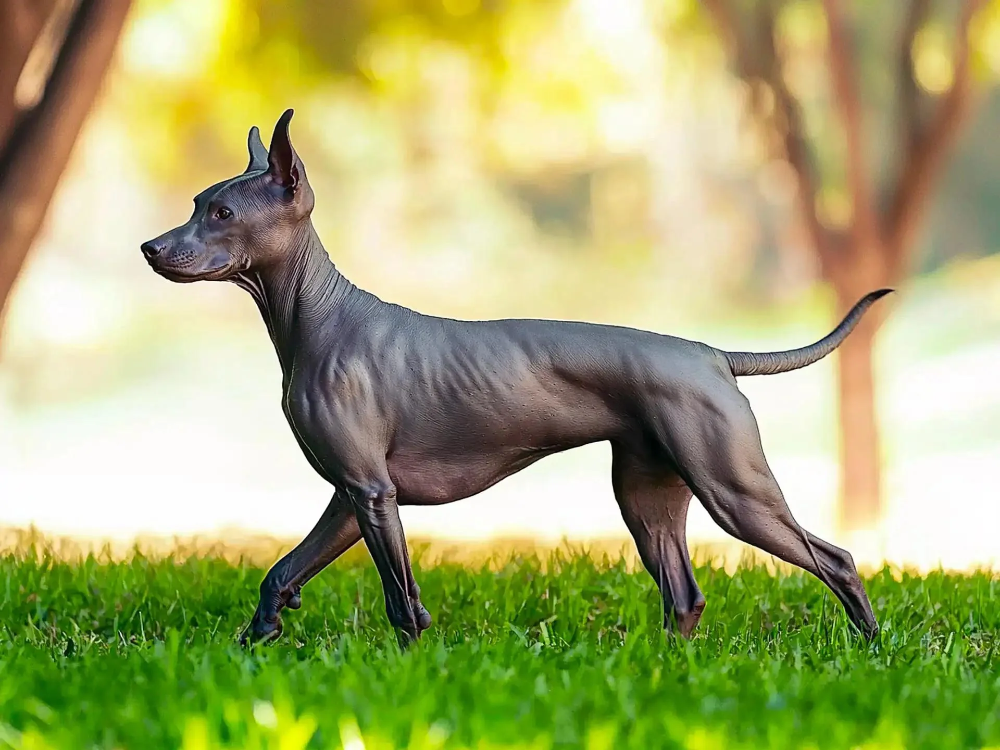
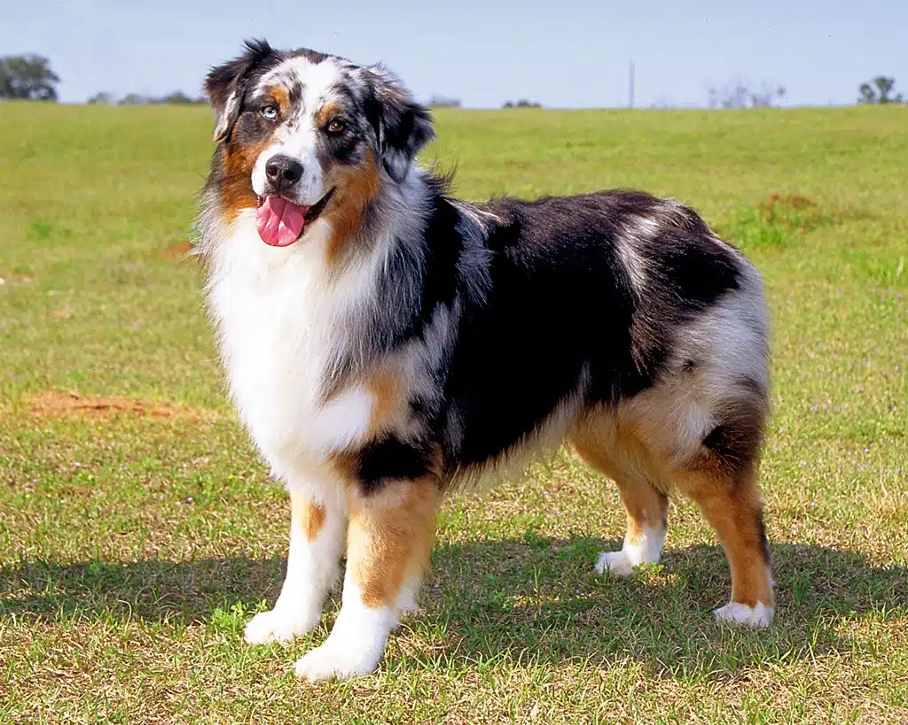

The Puffballs

With fur like a pillow, giving these dogs a hug is like diving into a pile of feathers.
The skin and bones
Dogs like this one are nice and low-maintenance, free from the work of shedding.
The Middle Group
Dogs with fur inbetween have a nice mix of having fur, but less grooming requirements.